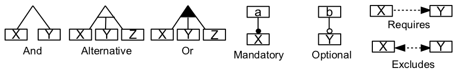
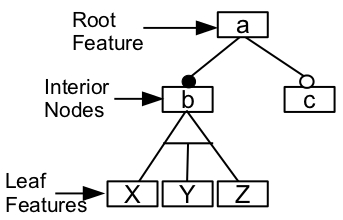

| Term Definition: Feature Model |
 |
|
A feature model is a hierarchically arranged set of features [1]. This model can implement the Variability Model. The categories of parental relationships between a feature and its subfeatures can be: 1) And: all subfeatures must be selected; 2) Alternative: only one subfeature can be selected; 3) Or: one or more subfeatures can be selected; 4) Mandatory: required features; and 5) Optional: optional features. In addition, there are two cross-tree constraints: 1) Requires: the selection of a feature implies the selection of another feature; 2) Excludes: feature X and feature Y cannot be chosen together. See Figure 1.  Figure 1. Relationships among features. A feature diagram is a graphical representation of a feature model. In a feature diagram, there is only one root feature on which all the other features depend, and primitive features are the leaves and compound features are the interior nodes. See Figure 2.  Figure 2. Feature diagram example. References
|